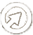
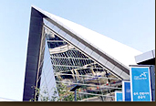
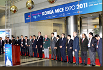
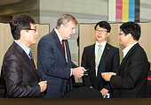

<!DOCTYPE html>
<html lang="en">
    <head>
        <meta charset="UTF-8" />
        <meta name="viewport" content="width=device-width, initial-scale=1.0" />
        <title>Document</title>
        <link rel="stylesheet" href="css/sub03_1.css" />
        <script src="https://kit.fontawesome.com/71dbb0a759.js" crossorigin="anonymous"></script>
    </head>
    <body>
        <div id="wrap">
            <header class="clearfix">
                <div class="top flexbox">
                    <h1>
                        <a href="index.html"></a>
                    </h1>
                    <nav>
                        <a href="sub01_1.html">정보공개</a>
                        <a href="sub02_1.html">국민참여</a>
                        <a href="sub03_1.html">사업</a>
                        <a href="sub04_1.html">알림</a>
                        <a href="sub05_1.html">공사</a>
                    </nav>
                    <div class="login">
                        <a href="login.html">로그인</a>
                        <a href="login.html">회원가입</a>
                        <a href="index.html"><i class="fas fa-search"></i></a>
                    </div>
                </div>
                <div class="depth">
                    <div class="depthMenu">
                        <ul>
                            <li><a href="sub01_1.html">정보공개창구</a></li>
                            <li><a href="sub01_1.html">공공데이터개방</a></li>
                            <li><a href="sub01_1.html">부채내용</a></li>
                        </ul>
                        <ul>
                            <li><a href="sub02_1.html">문의하기</a></li>
                        </ul>
                        <ul>
                            <li><a href="sub03_1.html">사업지원</a></li>
                        </ul>
                        <ul>
                            <li><a href="sub04_1.html">관광시장정보</a></li>
                            <li><a href="sub04_2.html">새소식</a></li>
                            <li><a href="sub04_3.html">갤러리</a></li>
                        </ul>
                        <ul>
                            <li><a href="sub05_1.html">조직안내</a></li>
                            <li><a href="sub05_2.html">시설안내</a></li>
                        </ul>
                    </div>
                </div>
            </header>

            <section>
                <div class="top sub3_1"><h2>사업지원</h2></div>

                <div class="selecticon">
                    <a href=""
                        ><i class="fas fa-atom"></i> <br /><br />
                        K-MICE</a
                    >
                    <a href=""
                        ><i class="fas fa-atom"></i> <br /><br />
                        베니키아</a
                    >
                    <a href=""
                        ><i class="fas fa-atom"></i> <br /><br />
                        중문골프장</a
                    >
                    <a href=""
                        ><i class="fas fa-atom"></i> <br /><br />
                        중문관광단지</a
                    >
                    <a href=""
                        ><i class="fas fa-atom"></i> <br /><br />
                        의료관광</a
                    >
                    <a href=""
                        ><i class="fas fa-atom"></i> <br /><br />
                        관광두레</a
                    >
                    <a href=""
                        ><i class="fas fa-atom"></i> <br /><br />
                        한국관광 품질인증체</a
                    >
                </div>
                <div class="bottomline"></div>
                <div class="content">
                    <div class="content01">
                        
                        <div class="subtext01">
                            <p>MICE 통합정보시스템</p>
                            <p>
                                MICE는 Meeting(회의), Incentive Travel(포상여행), Convention(컨벤션),<br />
                                Exhibition(전시)/Events(이벤트)의 약자입니다. <br />
                                K-MICE는 국내외 다양한 MICE 정보를 제공하는 포탈사이트입니다.
                            </p>
                            <div class="subbtn">
                                <span>KMICE 바로가기</span>
                                
                            </div>
                        </div>

                        <div class="content02">
                            <ul>
                                <li>
                                    <div>
                                        <p>01</p>
                                        <p>
                                            <span>사용자 기반 쌍방향 정보 제공</span> <br />
                                            K-MICE는 사용자 기반 중심으로 운영됩니다. 인재채용을 원하는 <br />
                                            기업은 구인공고를 게시할 수 있으며, 국내외 행사를 홍보하고 싶은 <br />
                                            기관은 행사를 직접 게시할 수 있습니다.
                                        </p>
                                    </div>
                                    
                                </li>
                                <li>
                                    <div>
                                        <p>02</p>
                                        <p>
                                            <span>MICE 산업 정보 제공</span><br />
                                            K-MICE는 MICE분야와 관련된 업체, 숙박 컨벤션시설이 <br />
                                            체계적으로 DB화 되어 있어 MICE 개ㅚ를 위한 필수 정보를 <br />
                                            제공합니다. 또한 지역별 컨벤션기구와 연동되어 있어 누구나 손쉽게 <br />
                                            MICE 관련 정보사이트에 접근할 수 있습니다. 아울러 MICE <br />
                                            통계정보를 통하여 국내 MICE 산업현황을 한눈에 볼 수 있습니다.
                                        </p>
                                    </div>
                                    
                                </li>
                                <li>
                                    <div>
                                        <p>03</p>
                                        <p>
                                            <span>전 세계 MICE 산업 미래</span><br />
                                            K-MICE는 전세계 주요 국가의 MICE 산업 동향 정보를 실시간으로 <br />
                                            제공하고 있습니다. 이러한 정보들은 국내 MICE 산업 종사자라면 <br />
                                            누구나 K-MICE에 접속하여 날마다 K-MICE에서 제공하는 유익하고 <br />
                                            새로운 정보를 얻을 수 있습니다.
                                        </p>
                                    </div>
                                    
                                </li>
                            </ul>
                        </div>
                    </div>
                </div>
            </section>
            <div class="bottomline"></div>

            <footer>
                <div class="foot01">
                    <div class="flexbox">
                        <ul class="clearfix">
                            <li><a href="">개인정보처리방침</a></li>
                            <li><a href="">저작권정책</a></li>
                            <li><a href="">고객서비스현장</a></li>
                            <li><a href="">전자우편무단수집거부</a></li>
                            <li><a href="">헬프데스크</a></li>
                            <li><a href="">고객의소리</a></li>
                            <li><a href="">홈페이지불편신고</a></li>
                        </ul>
                        <div class="dropdown">
                            <a href=""
                                >관련사이트 바로가기<em><i class="fas fa-chevron-up"></i></em
                            ></a>
                            <div class="pop">
                                <a href="">대한민국구석구석</a>
                                <a href="">K-MICE</a>
                                <a href="">걷기여행길</a>
                                <a href="">Go Camping</a>
                                <a href="">한국 크루즈 관광</a>
                                <a href="">Tour API 3.0</a>
                                <a href=""
                                    >관련사이트 바로가기<em><i class="fas fa-times"></i></em
                                ></a>
                            </div>
                        </div>
                    </div>
                </div>
                <div class="foot02">
                    <div class="flexbox">
                        <p>
                            우) 26464 강원도 원주시 세계로 10 TEL : (033)738-3000 사업자등록번호 : 202-81-50707 통신판매업신고 : 제
                            2009-서울중구-1234호
                        </p>
                        <p>Copyright &copy; 2007-2012 by KTO. ALL RIGHT RESERVED.</p>
                    </div>
                </div>
            </footer>
        </div>
    </body>
    <script src="https://kit.fontawesome.com/71dbb0a759.js"></script>
</html>
